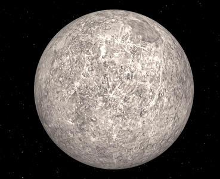

Planet Merkurius adalah planet terdekat dengan Matahari dalam tata surya. Ia memiliki diameter sekitar 4.880 kilometer, menjadikannya planet terkecil dalam tata surya. Permukaan Merkurius penuh dengan kawah, ngarai, dan bukit-bukit akibat tumbukan dengan benda langit lainnya selama miliaran tahun.
Merkurius memiliki periode revolusi yang singkat, yaitu sekitar 88 hari Bumi. Namun, periode rotasinya lebih lambat, hampir dua kali lipat dari periode revolusinya, sehingga satu hari Merkurius (waktu yang diperlukan untuk satu rotasi penuh) berlangsung sekitar 176 hari Bumi.
Planet ini memiliki atmosfer yang sangat tipis, hampir tidak ada udara yang dapat menahan panas Matahari, sehingga suhu permukaannya sangat ekstrem. Suhu di sisi siang hari Merkurius bisa mencapai lebih dari 400 derajat Celsius, sementara di sisi malamnya suhu turun drastis hingga di bawah minus 100 derajat Celsius.